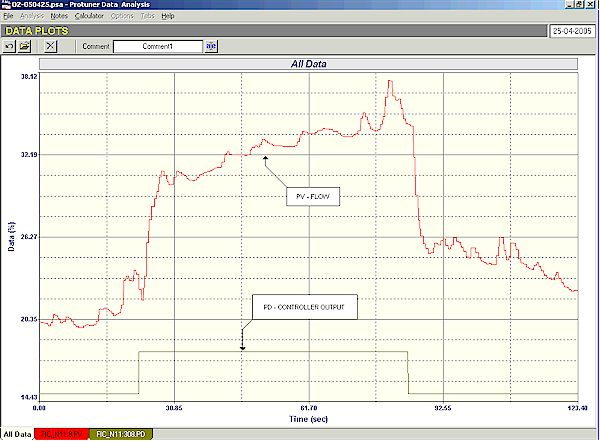
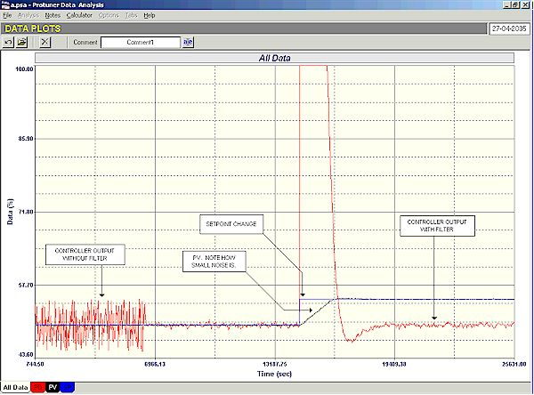

|
| [Home] [About us] [Contact us] [Training] [Optimisation services] [Protuner] |
| [Loop signatures] [Case histories] [Continuous loop performance monitoring] |
|
Control Loop Case History 83 DIFFICULT CONTROL LOOPS IN A BOARD FACTORY (PART 1) I spent a fascinating couple of days recently in a factory making chip boards. They have their own unique problems as do every other type of industry I get involved with. Very basically to make a chipboard one has to mix a variety of things like glue, water and other ingredients with the wood chips, which are then mixed together, and then go through a variety of processes, and are finally is pressed under intense pressure and fairly high temperature into the final product. It should also be mentioned that the boards consist of three layers with a core in the centre, and a face layer on the top and then bottom. The core and face layers are made with different recipes. The whole process is complex and a lot of expertise has gone into making it work properly. Loops worked on during my visit included the control of the flow of each the ingredients in the recipes, a level loop, and on some of the temperature loops on the press. Flow loops are usually very easy and fast to optimise, but as shown in numerous of my previous articles in this Case History series , severe problems are often encountered, of which the personnel the plant were usually completely unaware. In this plant the loops were working well. The flow meters were properly installed and well calibrated magnetic flow meters, and joy of joys, the final actuators were VSD's (variable speed drives) of the frequency changing type, driving gear pumps, which do not generally suffer from all the problems normally associated with valves. All the loops except one were extremely easy to optimise. In general the new tunings gave very stable responses to setpoint changes about 6 to 10 times faster than the original tuning settings, which is pretty much the normal improvement we achieve in plants. However the one displayed a peculiar problem. A portion of the open loop test is shown in Figure 1.  Figure 1 Flow loops are always self-regulating with the PV following changes in the PD (controller output). However in this case the PV shot up as it normally would when a step change was made in the PD. However it then started integrating up. This response is normally associated with a first order positive lead on an integrating process (which will be covered in detail in the next few months in my new Part 2 Loop Signature series). It is the first time I have ever seen it on a flow process, and it was very difficult to try and understand what caused it. We performed quite a few tests on the loop, and the only conclusion we could come to is that it was probably caused by the pump which was operating at a very low speed right down near the bottom of the VSD's range. Possibly there is some effect that on a step change there is an initial flow change, and then some sort of integrating effect. At some stage the plant is hoping to change the pump to a different type, and it is expected that this strange effect will then disappear. Just out of interest the effect does not present any problem on the actual control. You merely tune the loop as any normal flow loop, which gives a nice fast response, and the resulting fast control takes good care of the integrating portion of the response. The personnel on the plant were particularly keen on sorting out problems in the controls of some of the temperature loops on the press. The final product quality is extremely dependent on the temperature of used in various portions of the press. Poor temperature control results in boards being rejected with subsequent loss of production. There are three main temperature areas in the press, which presses several boards simultaneously. There are sections at the top and bottom where the temperatures are adjusted to keep the boards flat, and to prevent bowing. The temperature of the platens in the middle of the press is used to "cure" the boards correctly. The platen temperature was dealt with first. Essentially they are heated by hot oil flowing through them. The temperature of the oil can be varied by moving a 3-way valve which allows hotter oil from a primary source to be injected into the flow. This valve is operated by an electric actuator. The first thing of note on this loop was that the gain in the existing controller tuning was 120. This is the first time in my life that I have ever seen such a high gain in a modulating type controller. A gain of 120 is equivalent to a proportional band of 0.83%! This is effectively ON/OFF control, which of course is inherently unstable. Temperature processes of this type are generally integrating as they have the ability to absorb heat, i.e. more heat can be inserted in the process than is being lost from it, causing the temperature to rise in a ramp fashion. As there is usually no cooling, temperature is often much faster rising than when it is falling. Integrating processes have been dealt with in detail in my Loop Signature series (now available on CD). As shown there they are very difficult to tune if one does not have a thorough understanding of the dynamics and characteristics of such processes. To tune them it is important to get the process into balance first, where the heat flow into and out of the process are equal. At this point the temperature of the process will remain constant, and then one make a step change in manual to get the temperature into a ramp from which it is possible to calculate the process gain, which will allow one then to obtain tuning parameters. This particular process was found to react extremely slowly to changes, and it took nearly two hours to get it near balance. Unfortunately at that point an operator who had not been informed that we were performing tests on the process, did something on the primary heating source, which changed its temperature and hence affected the platen temperature. This is the type of thing that often happens in plants and is terribly frustrating as it can, and did in this case, upset hours of work. Unfortunately time did not permit the test to be repeated. However from what had already been done, it was possible to make a rough model of the process which although probably not highly accurate, was good enough to be able to study the process dynamics and then decide on how best to control it. The model showed two interesting facts. The process gain was 0.000064, and the deadtime was 68 seconds. This is very significant. The reciprocal of process gain of an integrating process is known as the process retention time, which in this case is approximately 4.5 hours. If this had been a level loop, it would mean that it would take the full tank 4.5 hours to empty with the control valve fully open. This is extremely slow. A deadtime of 70 seconds compared with 4.5 hours (16,200 seconds) is insignificant. Deadtime is the factor that causes instability in a process as it introduces phase lag. This means that on a process like this one can effectively put any type of tune into the controller without worrying too much about it going unstable. This is the reason why the plant was getting away with the previous huge gain of 120. Now the problem with a big gain in a controller is that any noise on the PV signal is amplified by that gain, and appears on the output. The actual signal from most temperature transmitters are generally relatively noise free as any random fluctuations or "noise" in the actual temperature are effectively well filtered by the thermowell of the temperature probe. In this case the signal was relatively clean with an average noise amplitude of only about 0.2%. However when this is multiplied by 120 it means that the output will have a noise amplitude of 24% on it. The frequency of the noise was relatively high In general high frequency noise like this is virtually completely attenuated in a pneumatic actuator, which acts very much as a dampener (or buffer) to noise, and the valve does not respond to it. Unfortunately in this case the actuator is not pneumatic, but electric, and it will respond immediately to fluctuations. To overcome this, one normally puts a small deadband around setpoint to try and prevent excessive switching and reversals of the motor. However you cannot put a 24% amplitude deadband on it, without excessive degradation of the control. One tries to keep a balance between control and gain in the controller. It's a real trade off situation. In this case it was decided that a gain of 50 in the controller was really needed to give good control. However it was killing the valve. The actuator was "doing its nut". The plant personnel told me that maintenance on these expensive actuators had become a huge and very expensive problem. This was when they had a gain of 120. Even with a gain of 50 movement was excessive. Therefore we decided to make use of a lag filter to try to keep actuator fluctuations down. A filter time constant of 50 seconds was eventually decided on, which sound huge, but is actually negligible on a process like this. Figure 2 shows how the filter cut back on controller output fluctuations, and also what a nice response was being obtained with the final tuning.  Figure 2 In the second part of this article, another very interesting temperature loop will be discussed, as will a level loop. Michael
Brown is a specialist in control loop optimisation, with many years of
experience in process control instrumentation. His main activities are
consulting, and teaching practical control loop analysis and
optimisation. He gives training courses which can be held in clients'
plants, where students can have the added benefit of practising on live
loops. His work takes him to plants all over South Africa, and also to
other countries. He can be contacted at: |